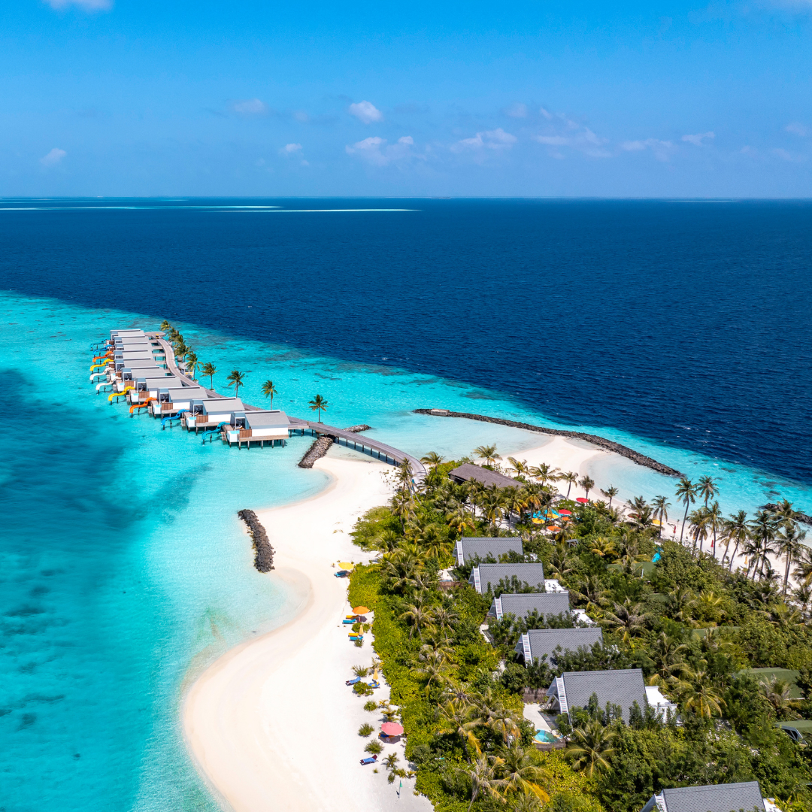

ЕГЗОТИЧНА ПОНУДА

ТРОПСКИ РАЈ И ПРИВАТНИ ПЛАЖИ
Малдиви
24.07 - 31.07
Откријте го тропскиот рај на Малдивите и уживајте во кристално чистото море, белите песочни плажи и неверојатните тропски пејзажи. Очекуваат ве луксузно сместување, приватна плажа и целосна релаксација далеку од секојдневниот живот. Совршена понуда за незаборавен егзотичен одмор.
ЕГЗОТИЧНА АВАНТУРА
Главниот град на Малдивите и одлично место за запознавање со локалниот живот и култура. Познат е по Исламскиот центар, Големата џамија, локалниот и рибниот пазар, како и живописната атмосфера покрај Индискиот Океан. Градот нуди интересен спој на традиција, локален начин на живот и тропска островска атмосфера.
Архипелаг составен од илјадници острови и атоли, познат по белите песочни плажи, тиркизното море и богатството на морскиот свет. Островите се идеални за пливање, сончање, сноркелинг и уживање во тропската природа. Кристално чистите води, коралните гребени и мирната атмосфера создаваат совршена средина за одмор и истражување на еден од најубавите тропски предели во светот.
Еден од најпознатите локални острови на Малдивите, каде покрај прекрасните плажи може да се запознае и секојдневниот живот на локалното население. Островот е познат по својата опуштена атмосфера, чистото море и можностите за различни морски активности. Посетителите можат да уживаат во пливање, сончање, сноркелинг и прошетки низ островот, како и во локалната кујна и продавниците со сувенири.
Едно од највпечатливите доживувања на Малдивите, особено поради отворениот хоризонт и тропската атмосфера. Пловидбата со брод во попладневните часови овозможува уживање во прекрасните бои на небото додека сонцето се спушта над Индискиот Океан. Мирното море, топлиот тропски воздух и погледот кон залезот создаваат незаборавен момент и совршен завршеток на денот.
Состанок со групата на аеродром во Скопје, 2 часа пред летот. Следува директен лет до Истамбул па директен лет до Малдиви и пристигнување на меѓународниот аеродром во Мале. По завршувањето на аеродромските процедури следува организиран трансфер до сместувањето. По сместувањето следува време за одмор и освежување. Попладнето е предвидено за прва прошетка и запознавање со островот. Вечерта е слободна за вечера и одмор. Ноќевање.
Појадок и организирана посета на главниот град Мале. Следува прошетка низ градот со посета на Исламскиот центар, локалниот пазар и рибниот пазар. Потоа е предвидено слободно време за кафе, ручек, фотографирање и купување сувенири. Попладнето следува враќање кон сместувањето и слободно време за одмор. Вечерта е слободна за индивидуални активности. Ноќевање.
Појадок и организирано патување со брод до еден од тропските острови. Следува уживање на белите песочни плажи и време за пливање и сончање. Во текот на денот е предвидено слободно време за фотографирање и релаксација покрај океанот. Потоа следува враќање со брод до сместувањето. Вечерта е слободна за одмор и уживање. Ноќевање.
Појадок и организирано тргнување со брод кон места погодни за сноркелинг. Следува пливање во кристално чистите води и набљудување на шарените корали и тропските риби. Патниците ќе имаат време и за одмор на бродот и фотографирање. По завршувањето на морската тура следува враќање во сместувањето. Вечерта е слободна за релаксација. Ноќевање.
Појадок и организирано патување со брод до природен песочен спруд среде Индискиот Океан. Следува време за пливање, сончање и фотографирање во уникатната тропска околина. Потоа продолжува морската тура со можност за уживање во кристално чистото море. Во попладневните часови следува враќање кон сместувањето и слободно време за одмор. Вечерта е слободна за индивидуални активности. Ноќевање.
Појадок и организирано патување до Маафуши, еден од познатите локални острови. Следува прошетка низ островот и запознавање со локалниот начин на живот и атмосфера. Потоа е предвидено слободно време за плажа, ручек, кафе и индивидуално разгледување. Во попладневните часови следува враќање кон сместувањето. Вечерта е слободна за одмор и вечера. Ноќевање.
Појадок и слободно време за одмор и уживање на плажата. Попладнето е предвидено за релаксирачка прошетка покрај океанот и слободни активности. Пред зајдисонце следува организирано излегување со брод за уживање во погледот кон залезот над Индискиот Океан. По враќањето следува слободна вечер за вечера и индивидуални активности. Ноќевање.
Појадок и одјавување согласно предвиденото време. По собирањето на багажот следува организиран трансфер до аеродромот во Мале. По пристигнувањето следува пријавување за летот и завршување на потребните аеродромски процедури. Потоа следи директен лет до Истамбул, па до Скопје. По пристигнувањето и преземањето на багажот завршува организираното патување.